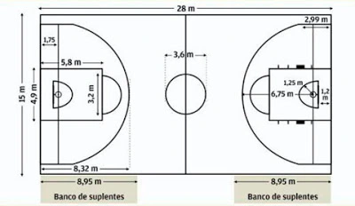

REGLAS
Se puede lanzar el balón con una o dos manos en cualquier dirección.
Es permitido palmear el balón con una o ambas manos en cualquier dirección.
Es prohibido correr con el balón en las manos. El jugador debe lanzarlo desde el lugar donde lo toma.
El balón solo puede sujetarse con las manos, no con los brazos ni con el cuerpo.
No se permite cargar con el hombro, agarrar, empujar, golpear o zancadillear a un oponente. La primera infracción a esta regla constituye una falta. La segunda infracción descalificará al jugador hasta que se consiga una canasta, o, si hay una evidente intención de causar una lesión, durante el resto del partido. Además, no se permitirá la sustitución del infractor.
Por las reglas 3 y 4, no se permite golpear el balón con el puño. La violación de esta regla se sanciona del mismo modo que la regla 5.
Si un equipo hace tres faltas consecutivas sin que el oponente haya realizado ninguna en el mismo intervalo de tiempo, el equipo contrincante se anotará un punto.
Se consiguen puntos cuando el balón lanzado o palmeado desde la pista, entra en el cesto y permanece allí sin que el equipo atacante toque o mueva el cesto. Si el balón se queda en el borde y un contrincante mueve la cesta, contará como un punto para los atacantes.
Cuando el balón sale fuera de la pista vuelve a lanzarse al campo de juego y entrará en posesión de la primera persona en tocarlo. En caso de duda, el árbitro auxiliar lanzará el balón a lo alto y dos oponentes intentarán interceptarlo saltando. El jugador que saca dispone de cinco segundos. Al tardar más, el balón pasa al oponente. Se considerará una falta si un equipo retrasa el juego de forma continua.
El árbitro auxiliar vigila a los jugadores y anota las faltas. Además avisa al árbitro principal cuando un equipo cometa tres faltas consecutivas. También puede eliminar a los jugadores conforme a la regla 5.
El árbitro principal vigila el balón y decide cuando está en juego, cuando ha salido de la pista y a quién le pertenece. Asimismo, decide cuándo se consigue un punto, lleva la cuenta del marcador y controla el tiempo junto con otras tareas propias de un árbitro.
El partido consiste en cuatro periodos de 10 o 12 minutos cada uno. Entre los cuartos hay descansos de cinco minutos.
El equipo que consigue más puntos es el ganador. En caso de empate, los capitanes de los equipos pueden acordar prorrogar el partido hasta que se marque un cesto.
tipos de tiro
🏀 Posicionar el cuerpo correctamente: los pies deben estar paralelos y apuntando al aro, ligeramente girados hacia adentro. La cabeza y el tronco rectos y las rodillas separadas, sin exceso.
🏀 Agarre: los pulgares deben de formar una «T», debemos separar los dedos y apoyar el balón en la yema de los dedos y en los colchones de la mano, nunca en la palma.
🏀 Levantar el balón: no subir el balón demasiado separado del cuerpo.
El balón tiene que subir con el codo cerrado, rozando la parte interior del brazo con tu costado y la mano que no lanza en el lateral superior, pero esta no debe afectar al lanzamiento.
🏀 Lanzamiento: debe ser un movimiento continuo coordinando todas las secciones del movimiento.
🏀 Post-lanzamiento: dejaremos la palma de la mano lanzadora en el aire, mirando hacia abajo esperando a que el balón toque aro. No seguiremos la trayectoria del balón con la mirada, sino que apuntamos a nuestro objetivo, la canasta.
MEDIDAS DE LA CANCHA DE FUTBOL
Para las principales competiciones oficiales de FIBA, así como para los terrenos de juego de nueva construcción, las dimensiones deben ser de 28 m de longitud por 15 m de anchura, medidas desde el borde interior de las líneas que delimitan el terreno de juego.

VOLVER AL INICIO